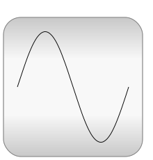

This library contains electrical components to build up analog and digital circuits, as well as machines to model electrical motors and generators, especially three phase induction machines such as an asynchronous motor.
| Name | Description |
|---|---|
| Library for analog electrical models | |
| Library for digital electrical components based on the VHDL standard with 9-valued logic and conversion to 2-,3-,4-valued logic | |
| Library for electric machines | |
| Library for electrical components of one or more phases | |
| Rectifiers, Inverters and DC/DC converters | |
|  QuasiStationary | Library for quasi-stationary electrical singlephase and multiphase AC simulation |
| Library for components of the Berkeley SPICE3 simulator |